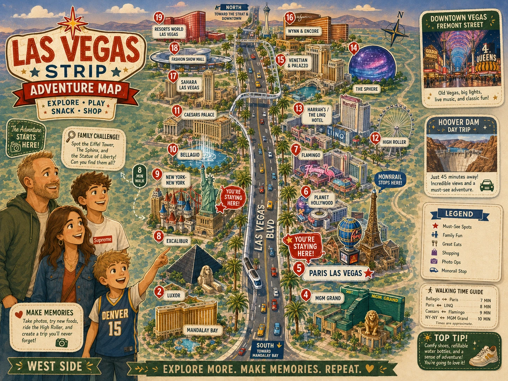

Las Vegas Adventure Map
A family-first illustrated Strip guide. Use the poster for fun and the cards below for real directions.

20 Vegas Missions
Tap cardsWelcome to Fabulous Las Vegas sign photo
Classic photo, but expect heat and a line.
Tap for Google Maps →2Swim at the Paris pool
Built-in win because you are staying there.
Tap for Google Maps →3Bellagio Fountains
Free, close to Paris, and best at night.
Tap for Google Maps →4Paris Eiffel Tower photo
Quick 'we made it to Vegas' moment.
Tap for Google Maps →5Walk The Venetian / Grand Canal
Free to wander, air-conditioned, and pairs well with Black Tap/Sphere.
Tap for Google Maps →6Sphere exterior view
See it from outside; no tickets needed.
Tap for Google Maps →7Fremont Street light show
Bonus downtown stop. Early evening only with the boys.
Tap for Google Maps →8Pinball Hall of Fame
Low-cost, hands-on, and good for a heat break.
Tap for Google Maps →9Bellagio Conservatory
Free, indoors, and easy to pair with fountains.
Tap for Google Maps →10New York-New York coaster watching
Watching is free. Riding is optional.
Tap for Google Maps →11New York-New York arcade walk-through
Cheap if you set a game budget.
Tap for Google Maps →12HERSHEY’S Chocolate World
Free to walk through; treats optional.
Tap for Google Maps →13M&M’S Las Vegas
Free to browse and close to MGM / NYNY.
Tap for Google Maps →14Coca-Cola Store
Free to browse; drink tasting optional.
Tap for Google Maps →15Walk the LINQ Promenade
Free walk, snacks, and people-watching.
Tap for Google Maps →16Watch High Roller from below
Seeing it is free. Riding is optional.
Tap for Google Maps →17Hotel lobby/atrium walk
Paris → Bellagio Conservatory → Caesars. Mostly indoor-ish, but still a real walk.
Tap for Google Maps →18Pool reset at New York-New York
Smart July activity after Zion and travel.
Tap for Google Maps →19Find the best Vegas sign/photo spot
Turn it into a family photo contest.
Tap for Google Maps →20Black Tap Milkshake Mission
Venetian / Grand Canal area. Get the wild shake, take the picture, move on.
Tap for Google Maps →